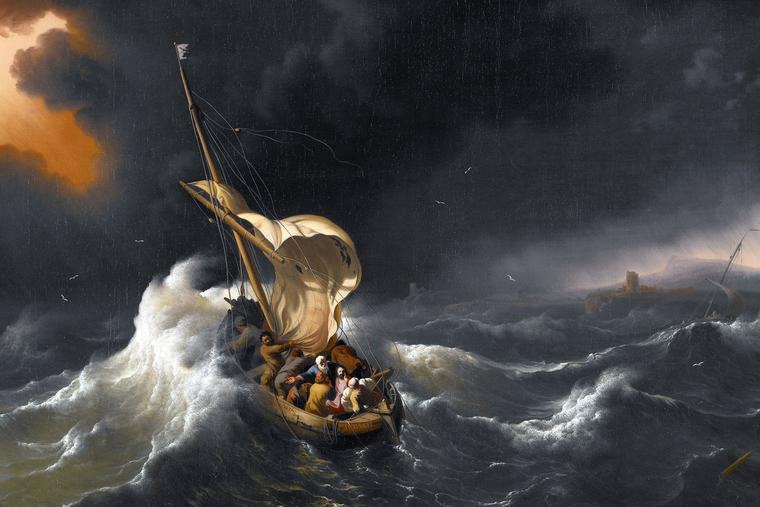

The enslavement of Africans and their forced conversion to Roman Catholicism during the period of European colonial expansion was compounded by their brutal conditions, including harsh labor, punishment, and the removal/forced abandonment of their identity and heritage. Their forced conversion to Roman Catholicism, was a common policy utilized by European colonizers, particularly the Spanish and Portuguese. The Europeans believed they were saving their souls by introducing Christianity, but simultaneously, the conversion was seen as a tool for social control, as it was thought to pacify and integrate enslaved populations into colonial societies. The process of conversion often began immediately upon the captives' arrival. Baptism was a key component, symbolizing a break from their past and the adoption of new, Christian identities (and their new economic circumstances). However, these conversions were superficial in many cases, but despite the forced conversions, many enslaved Africans retained elements of their traditional beliefs and practices. Over time, this led to the development of syncretic religions, combining elements of African spiritual practices with Roman Catholicism. Examples include Vodun in Haiti, Candomblé in Brazil, and Santería in Cuba.
Catholic Expedition & Conquest
Forced Conversion of Enslaved Africans
The Catholic Iberian presence in the Western Hemisphere, marked predominantly by Spain and Portugal, played a pivotal role in shaping the course of global history. The Reconquista, the centuries-long campaign to expel Muslims from the Iberian Peninsula, culminated in 1492, leaving these nations with a heightened sense of religious mission and a newfound focus on overseas expansion. The Spanish monarchs, Queen Isabella of Castile and King Ferdinand of Aragon, were instrumental in this expansion. Their campaign, resulting in the unification of Spain under Christian rule, was marked by a concerted effort to spread Catholicism. The expulsion of Jews and Muslims unless they converted to Christianity was a testament to the era's religious intolerance, and their sponsorship of Christopher Columbus's 1492 voyage was motivated partly by the desire to spread Christianity and partly by the search for new trade routes, especially to Asia. This voyage led to the unexpected discovery of the New World, opening an era of exploration and colonization. Portugal, under the leadership of Prince Henry the Navigator and later King John II, focused on exploring the African coast and finding a sea route to India. These expeditions were also deeply intertwined with the Catholic faith, as they sought to counter the Muslim dominance of Eastern trade routes and to find potential Christian allies against Islam.
Catholic Expedition & Conquest
Catholic Iberian Presence
The colonial ambitions of European nations were significantly driven by religious objectives. Catholic doctrine, emphasizing the salvation of souls, became a key motivator in the expansionist policies of these empires. This religious drive was not a simple quest for new lands or wealth; it was often portrayed as a divine mandate, a mission sanctioned by God. Stemming from Dum Diversas (1452) and Romanus Pontifex (1455), the Doctrine of Discovery granted Christian rulers the authority to claim territories they discovered and to propagate Christian teachings there. It became the cornerstone of European colonialism, intertwining religious mission with territorial expansion.
Catholic Expedition & Conquest
Religious Motivations in Colonialism
Christopher Columbus, often revered as the "Admiral of the Ocean Sea," remains one of the most iconic figures in the Age of Exploration. His voyages across the Atlantic, under the patronage of Spain's Catholic Monarchs, were pivotal in connecting the continents of Europe and the Americas. His primary goal was to establish a new trade route to the riches of the East Indies, bypassing the overland routes dominated by Muslim powers. Columbus, who was deeply religious himself, also embraced the idea of spreading Christianity to the lands he intended to explore. Spain's Catholic Monarchs, Queen Isabella of Castile and King Ferdinand of Aragon, saw potential in Columbus's plan. In 1492, following the completion of the Reconquista, they agreed to sponsor his voyage. This decision was influenced by the desire to expand Spanish influence, to gain a competitive edge in global trade, and spread Catholicism. Columbus undertook four voyages across the Atlantic between 1492 and 1504, which had profound religious implications. They were not only exploratory missions but also resembled the crusades, bearing the cross alongside the flag. The spread of Catholicism was a significant aspect of Spanish colonization that followed. Columbus himself set the precedent by initiating the conversion of indigenous peoples to Christianity.
Catholic Expedition & Conquest
Sailing For Catholic Monarchs
Many conquistadors saw their expeditions as extensions of the crusades. Figures like Hernán Cortés and Francisco Pizarro often described their conquests in religious terms, blending their thirst for gold and glory with a proclaimed desire to spread Christianity. This crusading spirit was a critical aspect of their self-justification, intertwining religious zeal with imperial ambition.
Catholic Expedition & Conquest
Catholic Motivations at Sea
The Catholic Church played a crucial role in the expansion of Iberian empires. The Treaty of Tordesillas in 1494, mediated by Pope Alexander VI, divided the newly discovered lands outside Europe between Portugal and Spain. This treaty was crucial in legitimizing and facilitating Iberian expansion in the name of spreading Catholicism. This division, sanctioned by the Church, underlines how religion was used not only to legitimize colonial claims but also to maintain peace between the two Catholic superpowers. The Spanish and Portuguese colonization of the Americas was not just a pursuit of wealth and land; it was also a religious crusade. Missionaries, mainly Jesuits, Franciscans, and Dominicans, accompanied conquistadors to convert indigenous populations to Christianity. This religious mission was often used to justify the harsh treatment and subjugation of native peoples.
Catholic Expedition & Conquest
The Treaty of Tordesillas
The "Suma de Tratos y Contratos," in the context of Spain's burgeoning overseas commerce, reflects the Catholic Church's influence on economic practices during the colonial period. This work, written by Tomás de Mercado, was a pivotal text reconciling commercial activities with Catholic doctrine, which viewed usury, or lending money at interest, as a sin. Mercado's work provided guidelines for ethical trade and financial dealings, aligning them with Christian morals. This alignment was crucial in an era where Spain's global economic activities were expanding rapidly, requiring a fine balance between economic growth and adherence to religious principles.
Catholic Expedition & Conquest
Spain's Overseas Commerce
In Havana and the general Caribbean, Spanish colonization was marked by the establishment of Catholic missions. These missions served two purposes: as centers for religious conversion and as instruments of Spanish control. They played a pivotal role in integrating the indigenous populations into the colonial system, often at the cost of eradicating native cultures and religious practices.
Catholic Expedition & Conquest